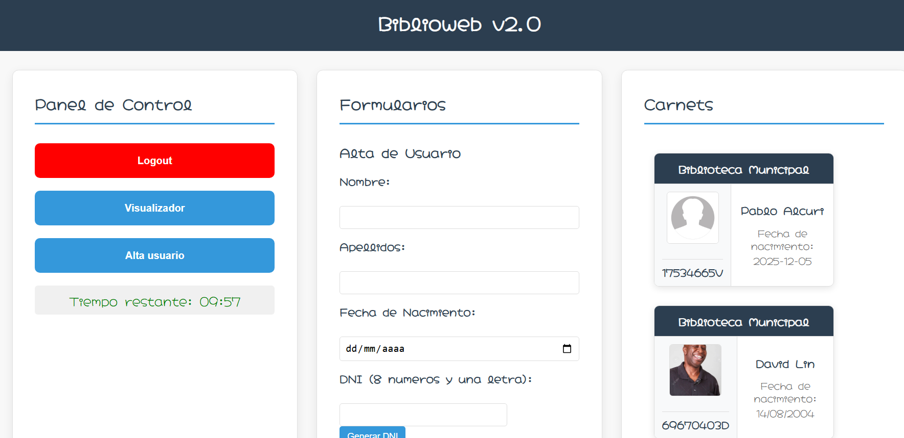
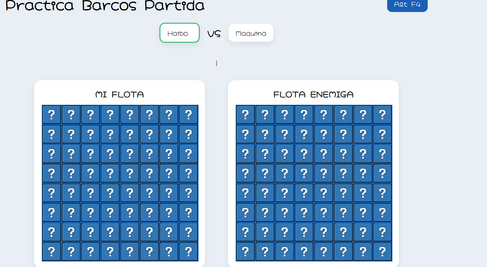

Django es un framework de desarrollo web basado en Python que permite crear aplicaciones robustas, seguras y escalables.
Como esta es una página estática, no es posible mostrar aquí todo el potencial de Django, ya que normalmente requiere servidor, base de datos y backend funcionando.
Sin embargo, durante el curso hemos trabajado con autenticación de usuarios, modelos, vistas, plantillas y bases de datos.

